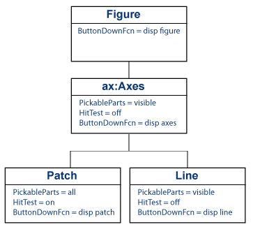

Capturing Mouse Clicks
Properties That Control Response to Mouse Clicks
There are two properties that determine if and how objects respond to mouse clicks:
PickableParts— Determines if an object captures mouse clicksHitTest— Determines if the object can respond to the mouse click it captures or passes the click to its closest ancestor.
Objects pass the click through the object hierarchy until reaching an object that can respond.
Programming a Response to a Mouse Click
When an object captures and responds to a mouse click, the object:
Executes its button down function in response to a mouse left-click — If the object defines a callback for the
ButtonDownFcnproperty, MATLAB® executes this callback.Displays context menu in response to a mouse right-click — If the object defined a context menu using the
ContextMenuproperty, MATLAB invokes this context menu.
Note
Figures do not have a PickableParts property.
Figures execute button callback functions regardless of the setting
of their HitTest property.
Note
If the axes PickableParts property is set
to 'none', the axes children cannot capture mouse
clicks. In this case, all mouse clicks are captured by the figure.
Combinations of PickablePart/HitTest Values
Use the PickableParts and HitTest properties
to implement the following behaviors:
Clicked object captures mouse click and responds with button down callback or context menu.
Clicked object captures mouse click and passes the mouse click to one of its ancestors, which can respond with button down callback or context menu.
Clicked object does not capture mouse click. Mouse click can be captured by objects behind the clicked object.
This table summarizes the response to a mouse click based on property values.
| Axes PickableParts | PickableParts | HitTest | Result of Mouse Click |
|---|---|---|---|
visible/all | visible (default) | on (default) | Clicking visible parts of object executes button down callback or invokes context menu |
visible/all | all | on | Clicking any part of the object, even if not visible, makes object current and executes button down callback or invokes context menu |
visible/all/none | none | on/off | Clicking the object never makes it the current object and can never execute button down callback or invoke context menu |
none | visible/all/none | on/off | Clicking any axes child objects never executes button down callback or invokes context menu |
MATLAB searches ancestors using the Parent property
of each object until finding a suitable ancestor or reaching the figure.
Passing Mouse Click Up the Hierarchy
Consider the following hierarchy of objects and their PickableParts and HitTest property
settings.

This code creates the hierarchy:
function pickHit f = figure; ax = axes; p = patch(rand(1,3),rand(1,3),'g'); l = line([1 0],[0 1]); set(f,'ButtonDownFcn',@(~,~)disp('figure'),... 'HitTest','off') set(ax,'ButtonDownFcn',@(~,~)disp('axes'),... 'HitTest','off') set(p,'ButtonDownFcn',@(~,~)disp('patch'),... 'PickableParts','all','FaceColor','none') set(l,'ButtonDownFcn',@(~,~)disp('line'),... 'HitTest','off') end
Click the Line
Left-click the line:
The line becomes the current object, but cannot execute its
ButtonDownFcncallback because itsHitTestproperty isoff.The line passes the hit to the closest ancestor (the parent axes), but the axes cannot execute its
ButtonDownFcncallback, so the axes passes the hit to the figure.The figure can execute its callback, so MATLAB displays
figurein the Command Window.
Click the Patch
The patch FaceColor is none.
However, the patch PickableParts is all,
so you can pick the patch by clicking the empty face and the edge.
The patch HitTest property is on so
the patch can become the current object. When the patch becomes the
current object, it executes its button down callback.